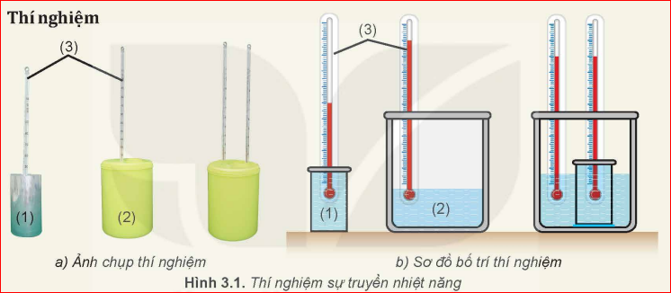

Làm thế nào để nhận biết được sự truyền nhiệt năng giữa các vật? Ví dụ, làm thế nào để nhận biết: "Vật nào là vật truyền nhiệt năng, vật nào là vật nhận nhiệt năng; sự truyền nhiệt năng đã dừng lại hay còn đang tiếp tục;...?"
I. Khái niệm nhiệt độ
Nhiệt độ là số đo độ "nóng", "lạnh" của một vật. Thí nghiệm sau đây giúp ta hiểu rõ hơn về chiều truyền nhiệt năng.
Thí nghiệm sự truyền nhiệt năng
Chuẩn bị:
Cốc nhôm (1) đựng 200mL nước ở \(30^\circ C\).
Bình cách nhiệt (2) đựng 500mL nước ở \(60^\circ C\).
Hai nhiệt kế (3).

Tiến hành: Đặt cốc nhôm vào bình cách nhiệt. Quan sát sự thay đổi nhiệt độ cho đến khi hai nhiệt độ bằng nhau.
Câu hỏi: Tại sao có thể biết nước trong bình truyền nhiệt năng cho nước trong cốc?
Vì nhiệt độ của nước trong bình giảm đi (mất bớt nhiệt năng) và nhiệt độ của nước trong cốc tăng lên (nhận thêm nhiệt năng).
Kết luận:
Nhiệt độ cho biết trạng thái cân bằng nhiệt của các vật và chiều truyền nhiệt năng. Nhiệt năng luôn tự truyền từ vật có nhiệt độ cao sang vật có nhiệt độ thấp hơn.
II. Thang nhiệt độ - Nhiệt kế
1. Thang Celsius (\(^\circ C\))
Được sử dụng phổ biến nhất trong đời sống hằng ngày.
Mốc 1: Nhiệt độ đóng băng của nước tinh khiết (\(0^\circ C\)).
Mốc 2: Nhiệt độ sôi của nước tinh khiết (\(100^\circ C\)).
Năm 1742, nhà thiên văn học người Thụy Điển Anders Celsius đã đề xuất thang nhiệt độ chia khoảng cách giữa nhiệt độ đông đặc và nhiệt độ sôi của nước thành 100 phần bằng nhau.
2. Thang Kelvin (K)
Sử dụng trong khoa học, gọi là thang nhiệt độ tuyệt đối.
Mốc 1: Độ không tuyệt đối (0 K) - nhiệt độ thấp nhất lý thuyết.
Mốc 2: Nhiệt độ điểm ba của nước (\(273,16 K\)).
Năm 1848, ông William Thomson (sau này là Nam tước Kelvin) đề xuất thang nhiệt độ dựa trên các nguyên lý nhiệt động lực học, không phụ thuộc vào tính chất của bất kỳ chất cụ thể nào.
3. Thang Fahrenheit (\(^\circ F\))
Thường dùng ở Mỹ và một số quốc gia nói tiếng Anh.
Mốc 1: Nhiệt độ đóng băng của nước tinh khiết (\(32^\circ F\)).
Mốc 2: Nhiệt độ sôi của nước tinh khiết (\(212^\circ F\)).
Năm 1724, nhà vật lý người Đức Gabriel Fahrenheit đã đề xuất thang nhiệt độ này dựa trên các mốc nhiệt độ của hỗn hợp nước đá, muối và cơ thể người.
4. Cách chuyển giá trị các thang nhiệt độ
a. Giữa Celsius và Kelvin:
\(T(K) = t(^\circ C) + 273,15\)
Trong các bài toán phổ thông, thường lấy làm tròn là + 273.
b. Giữa Celsius và Fahrenheit:
\(t(^\circ F) = 32 + 1,8 \cdot t(^\circ C)\)
Câu hỏi luyện tập: Một vật có nhiệt độ \(25^\circ C\), hãy đổi sang Kelvin và Fahrenheit.
Nhiệt độ thấp nhất mà con người từng tạo ra được trong phòng thí nghiệm chỉ cao hơn độ không tuyệt đối vài phần tỉ độ. Tại nhiệt độ này, các tính chất kỳ lạ của vật chất như siêu dẫn và siêu lỏng xuất hiện.
5. Nhiệt kế
Nhiệt kế là thiết bị đo nhiệt độ dựa trên một số tính chất vật lý phụ thuộc vào nhiệt độ (sự nở vì nhiệt, điện trở, bức xạ hồng ngoại...).
Loại nhiệt kế
Nguyên lý hoạt động
Ứng dụng
Nhiệt kế chất lỏng
Sự nở vì nhiệt của rượu hoặc thủy ngân
Đo nhiệt độ cơ thể, thời tiết
Nhiệt kế điện trở
Sự thay đổi điện trở theo nhiệt độ
Đo nhiệt độ chính xác trong công nghiệp
Nhiệt kế hồng ngoại
Bức xạ nhiệt của các vật
Đo không tiếp xúc, đo trán
Nhiệt kế thủy ngân hiện nay đang dần được thay thế bởi nhiệt kế điện tử hoặc nhiệt kế rượu vì thủy ngân là kim loại rất độc hại nếu nhiệt kế bị vỡ.
III. Củng cố
Em đã học
Nhiệt độ cho biết trạng thái cân bằng nhiệt.
Chiều truyền nhiệt: Cao sang Thấp.
Các thang nhiệt độ: C, K, F.
Nhiệt kế đo dựa trên tính chất vật lý.
Em có thể
Giải thích hiện tượng truyền nhiệt trong đời sống.